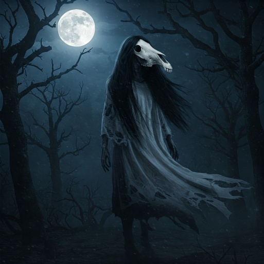

La Cegua

La Cegua es un espectro de origen náhuatl que acecha en los caminos solitarios a los hombres mujeriegos y trasnochadores. Se dice que aparece de noche como una mujer joven y deslumbrante, de cuerpo perfecto y voz dulce, que pide ayuda para llegar al pueblo más cercano. Siempre oculta su rostro con un velo o su larga cabellera negra para mantener el misterio ante el caballero que decide auxiliarla.
El horror ocurre cuando el hombre, cautivado por su belleza, intenta acercarse para abrazarla o besarla. En ese instante, la mujer revela su verdadera identidad: su rostro se transforma en una calavera de caballo podrida, con ojos de fuego y colmillos gigantescos. Su piel se vuelve cueroso y emite un relincho infernal que paraliza de terror a sus víctimas, dejándolas en un estado de shock permanente.
Quienes sobreviven a este encuentro suelen quedar con la mirada perdida o sufriendo de fiebres intensas por semanas. Se cuenta que la única forma de escapar de su abrazo es mostrándole una semilla de mostaza, ya que el espectro se detendrá a intentar contar los granos por una obsesión mística. Es una leyenda que sirve como advertencia moral contra la lujuria y los peligros de la noche.